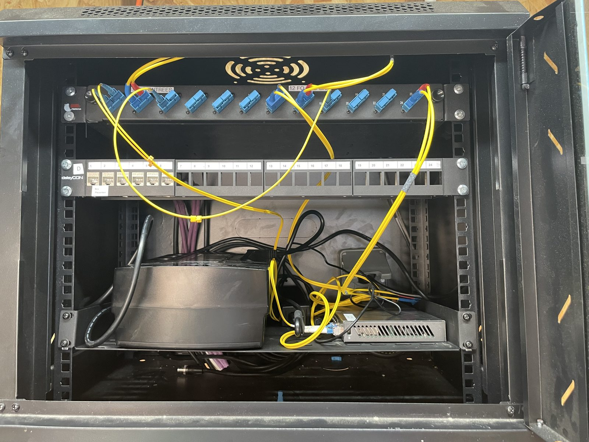
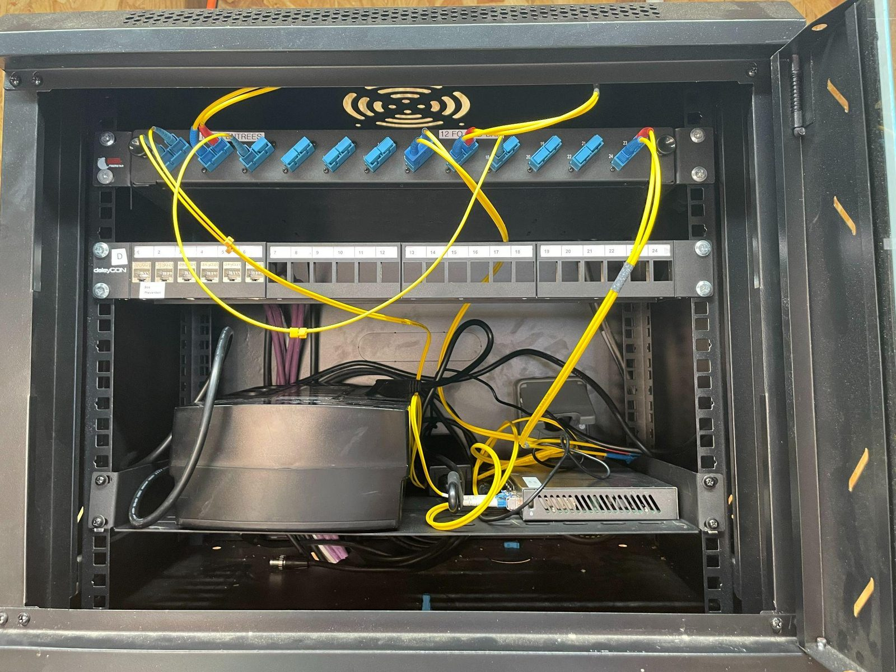
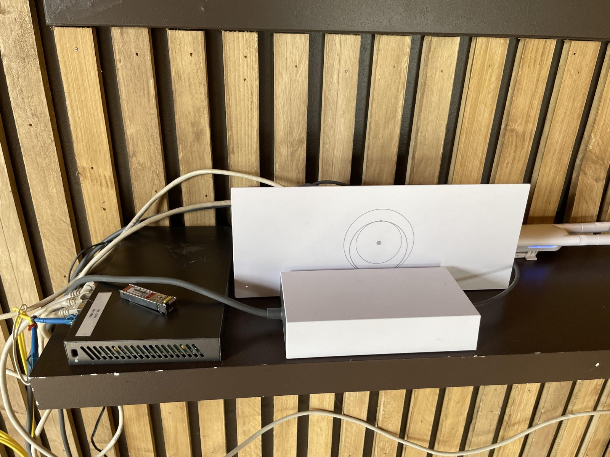

Contexte
LOXYS est prestataire réseau d'événements en Vendée. Ces réseaux sont temporaires : ils doivent être installés vite, fonctionner sans faille pendant l'événement, puis être démontés.
Réalisation
Le Canon français (08/06 – 15/06)
- Installation de la fibre et de bornes WiFi, dont une borne reliée à une antenne Starlink.
- Démontage de l'installation WiFi après l'événement.
Festival de Poupet (16/06 – 19/06)
- Baies itinérantes — installation d'étagères dans les baies pour y poser un switch et un onduleur.
- Bornes WiFi — installation puis configuration des bornes UniFi sur le site.
- Infrastructure segmentée — le réseau du festival sépare les flux par VLAN : public, artistes, régie et gestion des stocks.
- Vérifications — tests de la fibre et de la connectivité avant l'ouverture.
Ces déploiements ont été réalisés par l'équipe LOXYS ; j'y ai participé sur les tâches décrites ci-dessus.
Compétences mobilisées (bloc 1, épreuve E5)
5.2
Déployer un serviceDéployer sur site un service réseau temporaire : baies, bornes WiFi, vérification de la fibre. Voir l'explication · Voir les preuves
Ces compétences sont reportées dans mon tableau de synthèse E5.
Preuves



Rapport hebdomadaire : interventions du 08/06 au 19/06Ouvrir le PDF